A Community That Built a Temple
The first Jain Center organized in America — five traditions worshipping together under one roof in Elmhurst, Queens.
Seeds of a Sangha
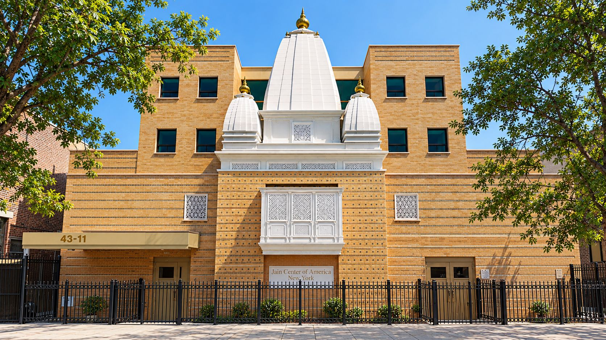
The first wave of Jain immigrants from India to New York, USA occurred in the mid 1960s. In order to preserve and maintain their religious and cultural heritage, these early migrants started to meet informally in 1965 in the borough of Manhattan in various facilities, such as Columbia University, the Indian Consulate, Jain Meditation Center and other Secular Halls. From these initial stages, the Jain Center of America - New York (JCA) was the first Jain Center organized and registered in America in 1976. In its early formative years, the members of the JCA NY Center had an organization, but no place to worship and practice their Jain religion. In 1981, the center purchased its first temple building in the borough of Queens, New York. In June 2005, the JCA NY celebrated its Pratishta Mahotsav in the newly constructed state-of-the- art temple at 43-11 Ithaca St, Elmhurst, Queens, NY, replacing the original temple building acquired in 1981. The unique design of this complex is a shining example of Unity with Diversity for the Jain Community of New York. The JCA NY Center was awarded the very prestigious “Best Religious Building” award for 2005 in Queens, NY, a borough known as the “Mosaic Melting Pot of America”.
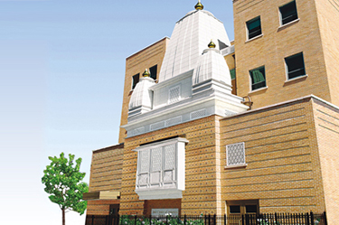
The JCA NY Temple Complex
The JCA NY Temple complex is a 16,625 Sq. Ft. facility, with four stories and a cellar. The total height of the temple is 66’ 5” with the Kalash. The Shikhar at the height of the building is 24’ 1” and the Kalash is 2’ 9”. The temple can accommodate over 500 people at one time. It has two separate stairways and one elevator for easy access to all the floors of the temple. There is a 4,000 Sq. Ft. of Parking Space with plans to purchase additional space for parking and a community hall in the rear of the complex. The most distinctive and unique feature of the JCA NY Temple complex is the manner in which it has managed to Unite the Diverse Traditions of the Jain faith under one building, with each tradition having their own worshipping space, to preserve their Unique Tradition and Identity, in order to foster greater Harmony and Unity among all its members.
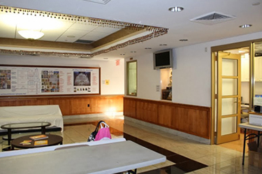
The Cellar of the Temple
The Cellar of the temple complex is 2,350 Sq. Ft. and consists of a multipurpose hall, youth center, computer area, mini theatre, children’s room and an art gallery that exhibits works on a rotational basis. It is often used for small meetings & conferences. The First Floor is 2,350 Sq. Ft. and comprises a front & back vestibule for entry, two coat & shoe rooms, rest rooms, a welcome and reception center, a small office with security, computer, TV video, public address system, and a senior center seating area with information and bulletin boards for its members.
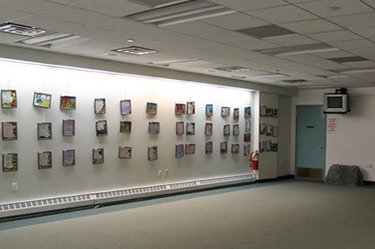
The Second Floor
The Second Floor of the building is 4,000 Sq. Ft. and consists of the Shri Mahavir Swami Temple in the Shwetambar tradition and a large Upashray Lecture Hall in the Sthanakvasi tradition. The Shri Mahavir Swami Temple has a Main Garbha Griha with Ghummat, Kalash & Dhwaja. The Mulnayak Pratimaji, Shri Mahavir Swami , is 21”, with a 25” Shri Neminathji on the right and a 25” Shri Sambhavnathji on the left side, all of white marble. In the back Gabhara, inside the Gokhalas, on the rear right side, is the 31” Pratimaji of Shri Parshwanathji in black marble and on the rear left side is the 31” Panch Dhatu Pratimaji of Shri Shantinathji. The Bhamati Parikrama is graced by an 81” Jaisalmer light brown Shri Adinathji Choumukhi. The east and west walls are graced by the idols of Shri Simandhar Swami, Shri Gautam Swami and eight other idols of Dev and Devi all made of white marble. The Upashray Lecture Hall, on the second floor, has space for about 200 people and provisions for audio-visual facilities and opens up via a folding partition to the Mahavir Swami Temple. The Upashraya is having a Navkar Mantra placed on the East Wall (Navkar Niche). The size of the Navkar Mantra is 4’x6’ and carved in crystal stone with colored gem stone inlay in the original color of each line of the mantra. There are many beautiful carved marble columns and arches as well as exquisite marble Pat and paintings on the walls of the temple, as well as chandan & shower rooms.
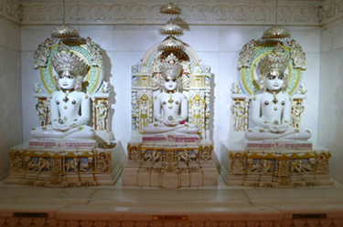
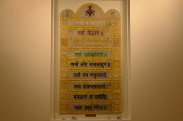
The Third Floor
The Third Floor of the building is 3,800 Sq. Ft. and consists of the Shri Adinathji Temple in the Digambar tradition, Shrimad Rajchandra Meditation Hall, and a Library. The Shri Adinathji Temple has a Main Garbha Griha with Three Shikhars, Kalash & Dhwaja. The Mulnayak Pratimaji is 31” Shri Adinathji Swami, with a 25” Shri Padma Prabhuji on the right and a 25” Shri Chandra Prabhuji on the left side, all of white marble. Inside the Gokhalas, on the right side, is the standing 51” Pratimaji of Shri Parshwanathji in black marble and on the left side is the standing 51” Pratimaji of Shri Bahubaliji of pink marble. Two Gokhalas contain smaller Pratimas of Shri Mahavir Swami in white marble and a Panch Dhatu Pratimaji of Shri Shantinath Swami. The other Gokhalas contain Jinvani Books, and picture of Acharyas. All five Pratimaji’s were consecrated in a Panch Kalyanak Puja at Agra, India in Feburary 2004. There are many beautiful carved marble columns and arches as well as numerous exquisite marble Pat and paintings on the walls of the temple. The Shrimad Rajchandra Meditation Hall has facilities for Samyak, Pratikraman, Bhakti & Sadhana. Inside a 60” x 30” marble structure is a Chitrapat of Shrimad Rajchandra along with a 7” Charan (Paduka), an “Aum” and an Idol of Mahavir Swami at the top. It has a folding partition with the Library, which contains an expanding collection of books and Shastras on Jainism, and a fully equipped JCA Manager and Administrative Office. Weekly Pathshala classes are held in the Library. There is also a Scholar’s Room for visiting Sadhu, Sadhvi and Scholars.
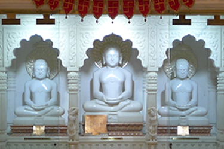
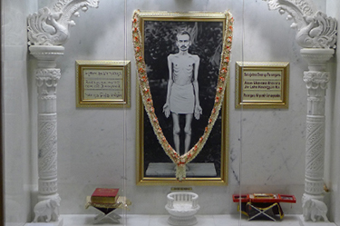
The Fourth Floor
The Fourth Floor of the building is 3,800 Sq. Ft. and consists of the Dadawadi Temple, The Asthapad Maha Tirth and the Dining Hall. The Dadawadi Temple contains a 15” Pratima of Shri Jin Kushal Suri Ji Maharaj and a 7” Charan installed in a white marble shrine open on all four sides under a canopy of skylight. In front of the Dadawadi Temple is a Roof Garden and the main Shikhar. The Asthapad Maha Tirth is located on the rear of the Dadawadi Temple, enclosed behind high security glass panels. The mountain is made of natural Crystal Stone and all the 24 Idols are carved out of Precious & Semiprecious Gemstones, cut in Jaipur, India. The Asthapad Maha Tirth weighs over ten tons. The Tirth is placed inside the conservatory under glass panels fully exposed to the sky. The consecration ceremony of the Tirth took place in June 2008. The Asthapad Maha Tirth has added to the uniqueness of the JCA NY Temple Complex. The Fourth Floor also contains a spacious Dining Hall & a fully equipped Kitchen with modern cooking facilities that can accommodate over 150 people at a time. Daily, and especially on weekends, visitors can participate in the activities and rituals of one or all Jain traditions and discover the extent to which the basic precepts of all our traditions are alike and finish of by enjoying Samoohik Swamivatsalya. Youngsters can come and attend Pathshala Classes that take place in the Temple on a weekly schedule.
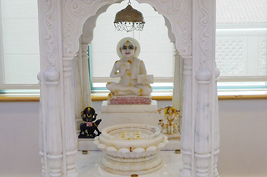
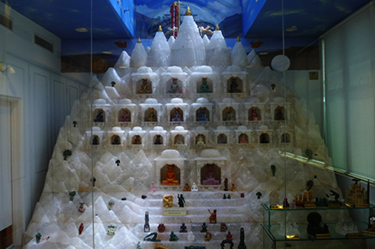
Since the inauguration of this complex in June 2005, there has been an increasing level of participation of our younger generation, both youth and professional, in ritual, educational and cultural activities. The JCA complex is fast becoming an example for Jains throughout the world as a model of Jain Unity within the Diversity of our Traditions, following the central Jain principle of Anekantvad.
Fifty Years of Footsteps
From informal gatherings in Manhattan to a five-tradition temple complex in Queens.
Jain Center of America (JCA) New York was founded in the year 1965. Registered as a non-profit corporation in 1970 in the State of New York, JCA was one of the first organizations established in North America not only to promote Jain principles and practice, but also to provide a place of worship for the Jain community. Before the building was acquired, New York-area Jains would meet at Columbia University and at the Indian Consulate in New York City or at individual residences.
On February 10, 1981, JCA purchased a residential building in Elmhurst, New York and was incorporated with the county on December 21, 1981. This residential building was converted into a Jain Center temple by installing an idol of Shri Mahavirswami. Since the modest beginning in 1982, this temple had become a focal point of Jain activities, such as hosting several Jain scholars, Jain Munis, Sadhvijis and celebrating Paryushan Maha Parva, Mahavir Janma Kalyanak, and other important religious ceremonies every year.
As the Jain population in the tri-state area grew significantly, the need for a larger temple to accommodate larger groups was strongly felt. An idea to build a new temple was borne following numerous suggestions by the community members based on the following guidelines taken from the 1993 circular:
- Traditional Shikharbandhi Temple for Swetamber and Digamber
- Sthanakvasi Upashraya
- Shrimad Rajchandra Sthanak and Sadhana Kendra
- Community Hall with all Modern Facilities
- Dinning Hall with fully Equipped Kitchen
- Pathashala, Library and Museum
- Adequate Parking Facilities
Objectives
The Jain Center’s goal is to envelope the mind, body and soul of every worshipper that comes through its inviting doors. The following factors were considered:
Follow the Jain code of conduct in the design and construction process.
Obtain guidance from various monks, scholars, and religious leaders.
Incorporate Jain temple Vastushastra, Jain architecture and aesthetics.
Center to be Non-Sectarian with all Jain beliefs represented equally.
Reflect and recognize collective efforts instead of individual names.
Consider suggestions from the JCA members.
Adhere to local laws and regulations.
Have facilities for disabled people.
Create a design that combines the best of Eastern traditions with Western technology.
Keep the community informed of the construction progress through newsletters and open houses.
Conceptualization and Site selection
In the year 2000, the planning process to give shape to a new temple began. The first question was where to build the temple that would fulfill the growing needs of the community. Several factors were considered in the site selection process, namely the need to accommodate large groups, represent various sects, and provide many facilities under one roof. Other factors included:
Current site of temple is an approved Zone area for a place of worship. This facilitated the approval of the plans by the City.
The property was fully paid for.
The temple site is centrally located for easy access by public transportation.
The site is in a safe area due to other religious institutions nearby.
Religious tradition to build a new temple on an existing temple site.
Design and planning
Building Plans
Designing a temple blueprint for construction in the middle of a city like New York was an intricate process. A number of constraints, apposing architecture, and religious factors had to be balanced. Some constraints, for example, included having only a limited amount of floor space and having to comply with city and fire department laws that imposed serious restrictions on designing the internal space. Since the floor space was horizontally limited, the natural solution was to create floor space vertically. Vertical design also allowed the construction committee to plan space on the third and fourth floors to accommodate different Jain beliefs. Another important factor in the design process was to provide space for the movement of people to be able to pray according to their religious tradition. Sen Architects firm was appointed for the project.
Award of Construction Contracts
After the blueprints for the temple were finalized, the next big task was to award the construction contract to a capable firm who could incorporate their construction expertise with religious requirements and work with the other subcontractors. A number of potential contractors were identified. An RFB (Request for Bid) was floated. The RFB incorporated our requirements of qualifications, experience, and city-approved blueprints they were to comply with. The Bids were reviewed by the construction committee, and after extensive rounds of discussion and comparative evaluation, Magnetic Construction was awarded the contract to be our general contractor, Ark System Electric was to be the Electric contractor, and Medco Plumbing was to be the HVAC contractor.
Temple Plans
Trivedi Crafts, temple architects from Ahmedabad, India, joined our team as advisors and helped us design the temple architecture to conform to various requirements of the Jain Religion. They also provided all the marble work including beautifully carved columns, Gabharas, Gokhalas, and intricately carved Arches.
To further the interests of all Jain beliefs and provide a visual representation, a number of PAT, paintings, sculptures and narratives were planned to be posted throughout the Temple walls and on the walls of lobbies and stairs.
Ancillary facilities
With a desire to combine tradition with modern technology, sophisticated audiovisual equipment, a PA system, computers, a telephone system and a modern security system were incorporated to make the temple the best place for community activities. The temple was wired to take advantage of the latest technological advancements. Specific areas have been created for community gatherings, education, library, dining, and the caretaker’s residence. A fully equipped kitchen was built to allow catering for large gatherings.
Summary
Accordingly, in the year 2000, planning to reconstruct the temple began in earnest. The old building was demolished by December 2001 and Bhoomi Poojan was performed on March 30, 2002. Shilaropan was performed on July 12, 2002. The temple building came to a completion in the year 2004. The Pratistha ceremony will be performed between June 10 to 19, 2005.
The architectural design and planning of this divine place stays true to the multiple codes and ethics of the Jain Religion and satisfies the needs of the Jain Community for a place of worship in New York City. In this temple, religion and architecture come together to create a space that is sacred in every detail, while adhering to civic regulations.
Various aspects of Jain beliefs are displayed through sculpture, artwork, paintings and narratives throughout the building. This will evoke a greater spiritual consciousness and awareness amongst all. This Jain Center aims to absorb the mind, body and soul of every one that comes to its doorstep.
Temporary certificate of occupancy was received on auspicious day of Mahavir Jayanti, April 22nd, 2005 - Chaitra Sudi Teras, Vir Samvat 2531, Vikram Samvat 2061
At a Glance
- Mahavir Swami Temple – 2nd Floor
- Adinath Temple – 3rd Floor
- Dadawadi/Ashtapad – 4th Floor
- Upashraya/Navkar Mantra – 2nd Floor
- Shrimad Hall/ Library – 3rd Floor
- Jain Chinha in Reserved area
- Navkar on 2nd floor Upashraya
- Various PATS & Art Work 2nd & 3rd fl.
- Ashtapad on 4th Floor
- Jain themes on lobby & stair walls.
- Makarana - White Marble
- Bhaislana - Black Marble
- Udaipur - Pink Marble
- Jaisalmer - Yellow Stone
- Panch Dhatu - Metal
- Ashtapad Tirth made from gemstones
- Panch Dhatu Idol (5 Metals) (350 kg)
- Choumukhi (Four Statues) (One piece)
- 2 Standing Idols (51” ht) Black & Pink
- Navkar Mantra made with Inlay Work
- Cellar – Multi-purpose Hall
- 1st Floor – Reception Hall
- 2nd Floor – Lecture Hall
- 3rd Floor – Meditation Hall/Library
- 4th Floor – Dining Hall
- Various Religious activities
- Bhojan Shala / Ayambil Shala
- Dadawadi/Ashtapad – 4th Floor
- Youth Center / Art Gallery
- Senior Center
- Uthapan – 4/6/01
- Bhoomi Poojan – 3/30/02
- Shila Sthapana – 7/12/02
- Anjan Shalaka – 2/9/04 & 5/2/04
- Pratishtha – 6/10 to 6/19/05
- General Contractor
- Electrical
- Plumbing and HVAC
- Marble Installation
- Kitchen and others
- Security
- Audio/Video
- Computer
- Telephone
- Furnishing
- Religious Leaders & Scholars
- Architects, Engineers & Consultants
- Donors and Well Wishers
- JCA Community & Committee Members
- Coordinators & Staff
- Jain Center
- Colorstone Business Community
- Diamond Business Community
- General
- Others
- Pabasan area is a reserved area - Earth to Sky
- Vision of Mulnayak is open to infinity (Both Temples)
- Darshan (View) Adinath Choumukhi from Ithaca Street
- View small shikhars from 3rd Flr Temple windows
- View main shikhar from Dadawadi & Dining Hall
- For All Jains
- Centrally Located
- Ease of Transportation
- Parking Facilities
- Abides Civic Regulations
Brick by Brick, in Pictures
43-11 Ithaca Street, Elmhurst, NY 11373 — from the 1981 purchase to the finished building.
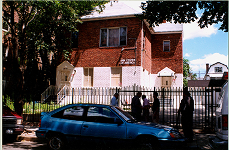
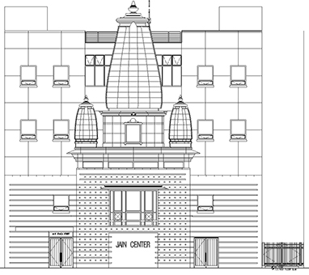
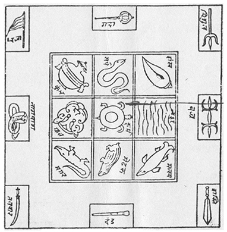
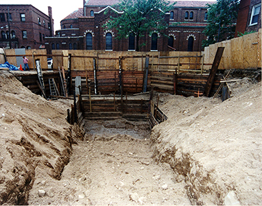
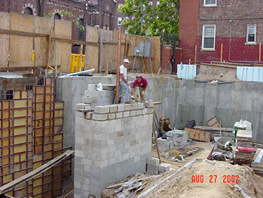
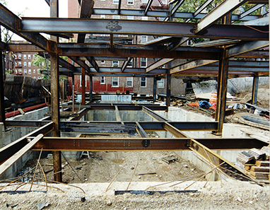
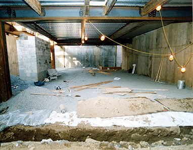
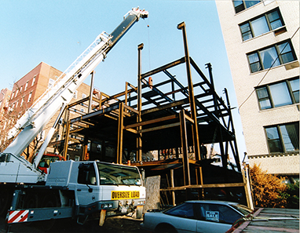
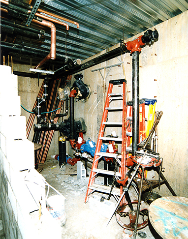
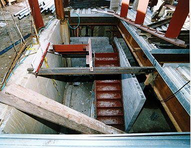
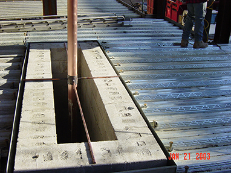
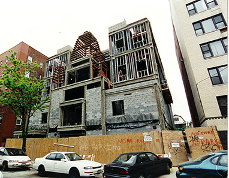
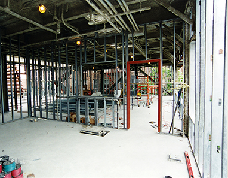
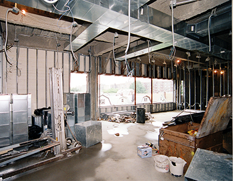
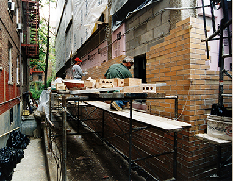
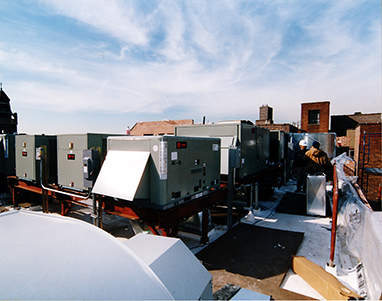
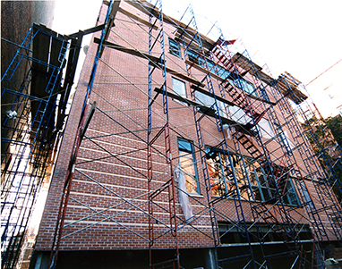
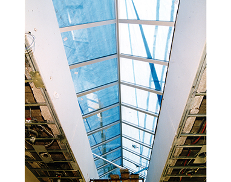
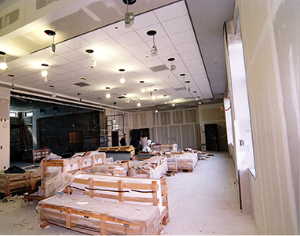
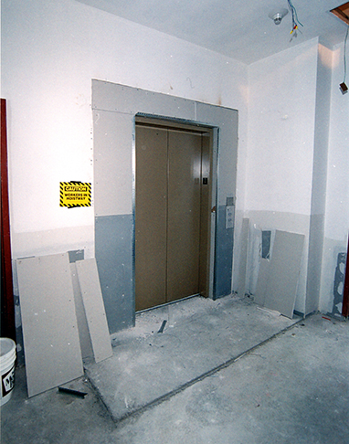
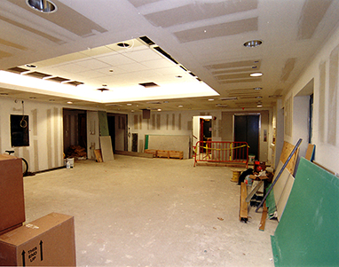
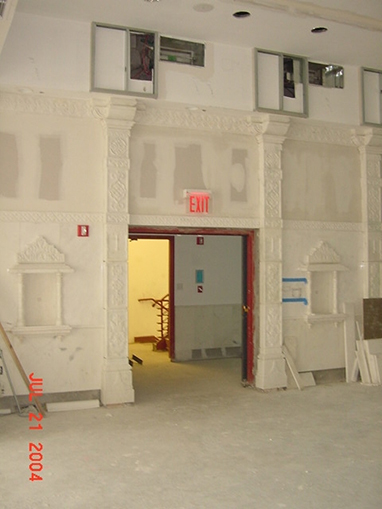
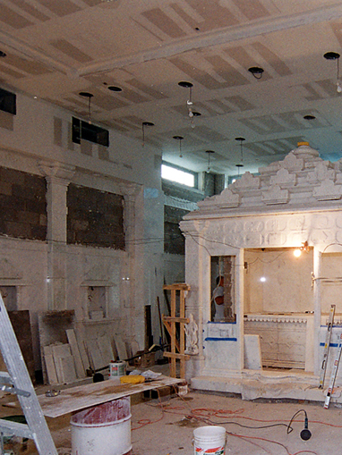
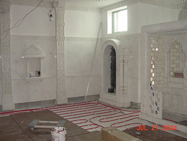
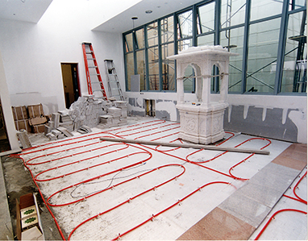
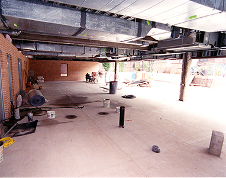
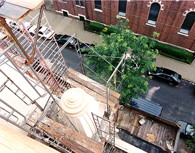
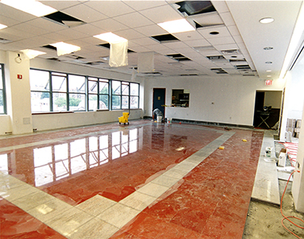
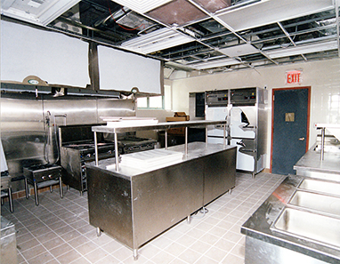
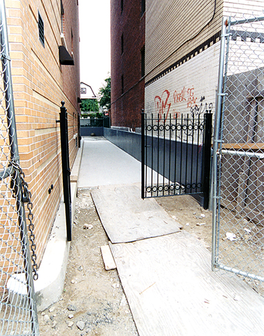
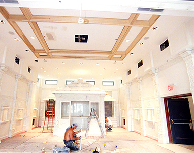
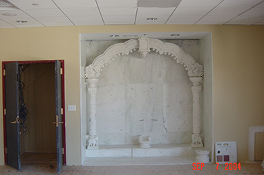
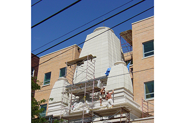
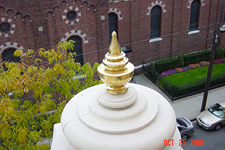
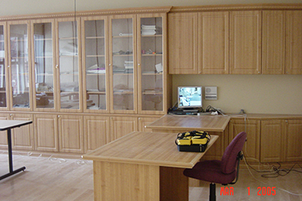
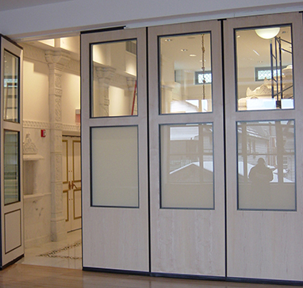
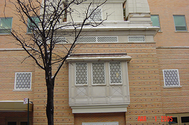
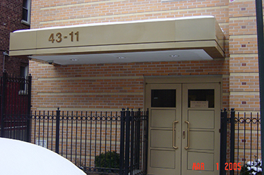
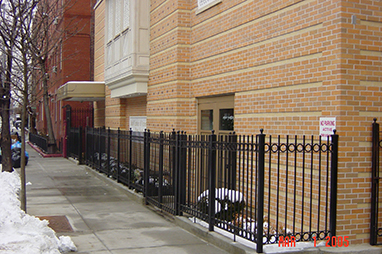
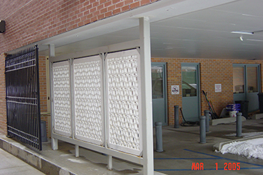
Jai Jinendra — Dear Sadharmik Brothers and Sisters,
"I understand once again that the greatness of God always reveals itself in the simple things." – Paulo Coelho
Let me begin with this quote that amplifies the purpose of our lives. Thank you once again for trusting me this coveted opportunity to serve as the Chairman of the Jain Center of America. I welcome the new members of the Board of Trustees, the Executive Committee, the religious coordinators and the kitchen volunteers who all give their time and service selflessly.
Our Centre is thriving, and a lot of credit goes to you all, the core of our unique amalgamation of so many Jain traditions and faiths. A sacred and safe place for spiritual growth for all those who visit.
We are blessed to have a strong team as the backbone of the Center. I urge you to encourage and support the relentless work by attending all the events, functions and lectures as much as possible.
Looking forward to grow and learn as we all continue our journey together.
Once again, I thank each one of you on behalf of JCA.
Thanks and Regards,
Mehul D Shah
Chairman, JCA NY
Jai Jinendra — Dear Sadharmik Brothers and Sisters,
I feel extremely blessed and thankful to God for bestowing a coveted opportunity to me. I have the chance to do seva of Jin mandir and our Jain sangh of New York, USA. The sangh, is often referred to as the 25th Tirthankar, and I cannot be grateful enough for getting a chance to serve our unique Sangh.
I extend a heartfelt thanks to the entire Board of Trustees and the Executive Committee who are a huge source of support and guidance.
With this position, I would identify my goal to further unify our exceptional Sangh. I yearn to provide the most suitable environment to enhance learning and growth. A place of worship where, no matter what one’s age, or panth all are welcomed by the entire community. Through organization of rituals, shibirs, Pathshala, lectures, the executive committee wishes to be a substantial part of every member’s spiritual growth.
JCA will continue to be a sanctuary for every sadharmik’s bond to a sacred path. We want to facilitate the Jain way of life to the fullest.
My predecessor’s have been instrumental in creating the present day environment of genuine seva at JCA. I promise to maintain the same and give my best to enhance it.
I seek your co-operation and trust as I go forward in the path of managing my responsibilities. I will forever be indebted to my executive committee who have promised to work hand-in hand to manage daily operations and involve the youth.
I pray to God to give me the strength and wisdom to do my best.
Warm Regards,
Rasik Sanghavi
President, JCA NY
Every Path, Equally Honored
JCA exists to preserve and share Jain religious and cultural heritage for its community — and to do it in a way few Jain centers attempt, by uniting Shvetambar Murtipujak, Sthanakvasi, Digambar, and Shrimad Rajchandra practice under a single roof, with equal reverence for each.
Fifty years ago, a handful of families gathered in a Manhattan apartment. Today, five traditions worship under one roof — and every member is part of what comes next.
The Board of Trustees, Jain Center of AmericaGuardians of the Mission
The Board sets policy and holds the Center in trust for the membership.
Carrying the Work Forward
The Executive Committee runs day-to-day operations between General Body Meetings.
Lamps That Keep Us Lit
Service Award recipients
| 2025 Seva Award | Illustrative name — not a published record |
| 2024 Seva Award | Illustrative name — not a published record |
Lifetime Supporters
| Illustrative name | Since 2001 |
| Illustrative name | Since 2009 |
Open Books, Clear Rules
JCA reports to its membership at the annual General Body Meeting each December, and publishes its governing documents for any member to review.
Find Your Way to Elmhurst
— no appointment needed to stop by.
Getting here
43-11 Ithaca Street sits in Elmhurst, Queens. Street parking is available nearby, with an overflow lot open on festival days.